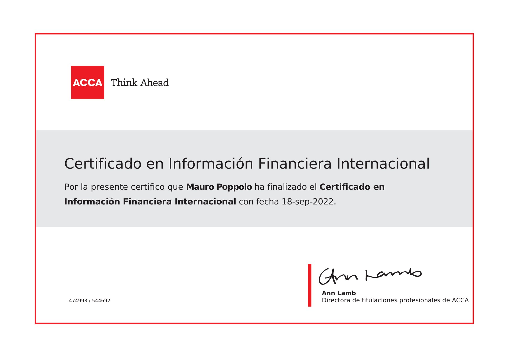

Master of Business Administration (MBA)
UCU Business School, Universidad Católica del Uruguay · 2020–2021
Director of Finance / AI‑Native Finance Transformation
I lead finance with an AI‑first operating model, already proven in day‑to‑day operations and built on deep technical expertise in accounting, consolidation, tax, transfer pricing and M&A. The result: finance that closes faster, costs less and scales without adding headcount.
Director of Finance with more than ten years across the CFO agenda: statutory accounting, group consolidation, tax, controls, M&A, and AI‑native finance transformation.
I lead the finance function at Clarity AI, reporting directly to the CFO, across six jurisdictions in the US, Europe and the Middle East, working async across time zones and business cultures. Before that I held finance roles at Glovo and BASF, after more than seven years at PwC in accounting, IFRS, transfer pricing and global mobility.
As a former IFRS instructor at PwC and university lecturer, I care about making complex financial topics clear for any audience, and about questioning how finance teams are conventionally run.
Rethinking how your finance function runs? Let's talk.
Remote, Spain · Finance Manager → Director of Finance
Leads an AI‑first finance function: accounts payable, the month‑end close, reconciliations and tax compliance run on AI workflows, with the team reviewing rather than producing (see Selected Impact). Reports directly to the CFO, with end‑to‑end responsibility across six jurisdictions in the US, Europe and the Middle East, working async across time zones: group accounting, statutory reporting and consolidation; tax compliance and transfer pricing, including a redesign of the group's transfer pricing policy with PwC; audit coordination as primary counterpart to external auditors and advisors; and financial and tax due diligence across two transactions, plus the finance integration of both.
Acting Finance Lead from March 2025, running the full finance lead scope ahead of the formal appointment as Director.
Led accounting, tax compliance, audit coordination and group reporting across multiple jurisdictions, with a team of four. Owned the month‑end close, statutory filings and intercompany, cutting the close from 10–15 days to 4, and started the automation and AI workflows the function runs on today.
Glovo · Barcelona, Spain
Financial reporting and controlling for Glovo's largest business unit, South‑West Europe (Spain, Italy, Portugal, Poland). Led month‑end close, variance analysis and management reporting, and acted as finance business partner to regional stakeholders.
BASF Services Americas · Montevideo, Uruguay
Owned the core financial reporting packages for the U.S. entities of BASF, the world's largest chemical company (DAX 40), within a North American business of over €20bn in annual sales, and served as the reporting interface between local operations, the United States and group headquarters in Germany.
PwC · Montevideo, Uruguay
More than seven years in accounting, IFRS, payroll, transfer pricing and global mobility for multi‑country clients. IFRS instructor in PwC's internal training programmes (2014–2019); transfer pricing and expatriate tax advisory (2020–2021).
UCU Business School, Universidad Católica del Uruguay · 2020–2021
UCU Business School, Universidad Católica del Uruguay · 2011–2015

Six things built at Clarity AI between 2024 and 2026. Each one follows the same idea: AI does the mechanical work, people do the review.
Clarity AI · Month‑end close
Redesigning the close from the first data extract to the board report.
Month‑end close took 10 to 15 days, and most of that time went into producing the numbers rather than reviewing them.
NetSuite data flows into a Google Sheets close tool that runs the calculations, pivot analyses and variance summaries automatically. Every journal entry carries an AI‑generated memo explaining what it is and why it was posted. Each accountant keeps a persistent AI thread for their P&L and balance sheet section, so the commentary gets more accurate month after month. The board report is drafted from the same data and then reviewed by a senior. One source of truth: every figure comes straight from the system, with minimal manual intervention.
Close completed in 4 days with no additional headcount, and audit‑ready documentation on every journal entry, every month.
Clarity AI · Accounts payable
From the incoming invoice to the bank payment, with fraud controls built into the process.
Invoices were entered, posted and paid by hand, and payment exceptions only surfaced when someone audited them.
Invoices arrive at a dedicated mailbox and are read by an AI scanning tool integrated with NetSuite, which posts a draft entry and routes it for approval. Approved invoices load automatically into a weekly payment batch in Revolut. Two controls run on every payment: any manual entry is flagged as an exception, and the bank account is cross‑checked against the invoice before release.
Payment errors dropped to zero, and exceptions are visible by default. The accountant's time moved from data entry to exception review.
Clarity AI · Reconciliations
One standard working paper, whoever runs it, and accountants who validate instead of execute.
Bank reconciliations across multiple entities and currencies took hours of line‑by‑line review, and working papers differed from person to person.
A single standardised prompt produces the same working paper every time: NetSuite data goes in, the finished reconciliation file comes out, and the accountant judges whether the result makes business sense. Guardrails define what is normal and what needs senior escalation.
Bank reconciliations went from hours to minutes. Working papers are uniform across the team, and the guardrail documentation serves directly as the audit trail for each control.
Clarity AI · Tax compliance
A knowledge base of every filing obligation in every jurisdiction, usable through AI by any team member.
Tax filings across all jurisdictions needed a senior finance lead, and the knowledge of how to do them sat with one person.
Built a library in Notion with, for each filing, the due date, step‑by‑step process, contacts, technical background and history of prior submissions, linked to the compliance calendar and runbooks. A team member asks the AI to prepare a filing; it retrieves the runbook and history and guides the execution.
Filings are now executed by a junior accountant with senior review at sign‑off only. Compliance risk is lower, and each completed filing strengthens the knowledge base for the next cycle.
Clarity AI · M&A
A complete data room package built by a team with no prior M&A experience.
A due diligence process needed a full package covering receivables, payables, tax, statutory accounts and key reconciliations, work that traditionally takes a director several weeks full‑time.
Each accountant built their own section with AI guiding the structure, while they supplied the data and context. Senior review came at the end to validate completeness and accuracy, not to build the pack. For questionnaires, AI connected to the document drive retrieved supporting documents in seconds.
The team entered the process with a reviewed, presentation‑ready pack, and answered first‑round requests in hours rather than days.
Clarity AI · Ways of working
AI as an always‑on participant in every task, not a tool consulted when stuck.
Coordination ran through meetings and email chains, and staying informed meant being in the room.
Every team member works with their own AI assistant and a shared Notion workspace. Meetings are transcribed and stored automatically. Each Monday a prompt builds every person's task list from the previous week's meetings, messages and emails, and agendas for one‑to‑ones with Legal, FP&A and the CFO are prepared from all open items across the team.
Meetings are reduced to the essential ones, every commitment is documented and tracked, and the team's output grew without adding headcount or working hours.
Rethinking how your finance function runs, or looking for a finance leader who builds with AI? Let's talk.
Move: mouse, touch, or ↑ ↓ · Space or tap to start / pause